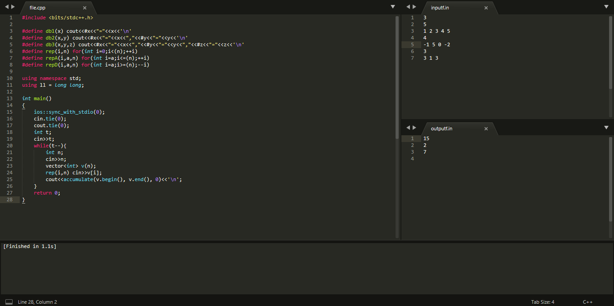
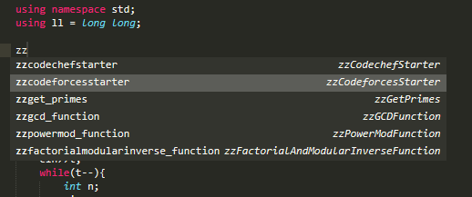
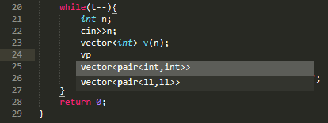
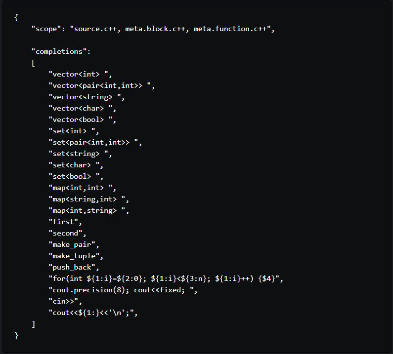

1.Install
MinGW is a native Windows port of the GNU Compiler Collection (GCC). Install the latest MinGW compiler, after downloading from here.
Your path should preferably be C:\MinGW. Finally, add the bin directory, C:\MinGW\bin to the System PATH.
2.Install Sublime Text
Halo Infinite is being developed by 343 Industries using the new Slipspace Engine. The story entered planning stages in 2015.[18] An announcement trailer was released on June 10, 2018.[19] The developer said that all of the scenes in the Halo Infinite trailer were running in the engine.[20][21][22] Halo Infinite will feature split-screen again, in response to the backlash of its removal in the previous game.[23] It was also planned to have a beta prior to its release, described as an insider flight program.[2]
3.Create A Build System
Sublime Text provides build systems to allow users to run external programs. Create a new build system for Sublime Text for setting up C++ compilation.
Go to Tools > Build System > New Build System. Paste the following code in the file and save it.
This can be used for piping input from the inputf.in file, and output to the outputf.in file. Note that this uses the -std=c++17 flag to enable the latest features of C++17. If you don't want this or want to use C++14, replace this with the -std=c++14 flag.
4.Setup Window Layout
Create three new files, file.cpp, inputf.in, and outputf.in. Select View > Layout > Columns : 3. This will create three columns in the workspace. Move the three files into the three columns. Select View > Groups >Max Columns:2.

The windows will look like above when you are done. Write a hello world program, and test its working. Use Ctrl+B to build and execute the file.
5.Precompile Headers
Now we can speed up compilation time by precompiling all the header files as mentioned here, i.e. by precompiling the bits/stdc++.h header file. This can speed up compilation time by up to a factor of 12.
For this, first, navigate to the stdc++.h file. This will be located at a directory similar to C:\MinGW\lib\gcc\mingw32\6.3.0\include\c++\mingw32\bits. Right click while pressing Shift to open a Powershell/cmd window there. Run the command g++ -std=c++17 stdc++.h, to compile the header. Take care to use the same flags you used in your build system. Check to make sure that the stdc++.h.gch file was created in the directory.
Finally, we can take advantage of the features of Sublime Text, namely snippets and completions.
Sublime Text Features
1.Snippets

Snippets are smart templates that will insert text for you and adapt it to their context. Read up on the documentation of snippets at the official guide. You can create snippets like the following to quickly insert snippets of code into your file.
2.Completions

Sublime Text suggests completions that aggregate code or content while writing by catching everything that you have written, like variable names. Read up on the documentation of completions at the official guide. You can create completions like the following to quickly enter common phrases into your file.

This provides an experience close to code completion, with the advantage that you can customize it to phrases you frequently type.
You can create snippet or completion files by putting the corresponding code in a .sublime-snippet or .sublime-completions file.
So that's the basics out of the way, you can now begin coding. You can also explore various other features present in Sublime text, especially its plugin functionality and the most common plugins. You can also install themes to change the look and feel of the windows. There are other features that you may want to use so I’ve provided some
further reading.
Video Link
How to set up Sublime Text for Competitive Coding?
Google Coding Interview